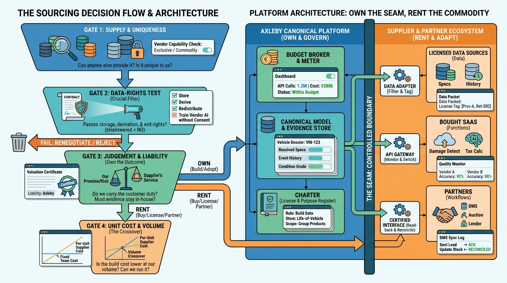

Part IX — LEADERSHIP: The Chief Architect's Agenda
Build, Buy or Partner: Sourcing Vehicle Data and Platform Capabilities

Image generated by Google Gemini (gemini-3-pro-image-preview)
Part IX — LEADERSHIP: The Chief Architect's Agenda

Image generated by Google Gemini (gemini-3-pro-image-preview)